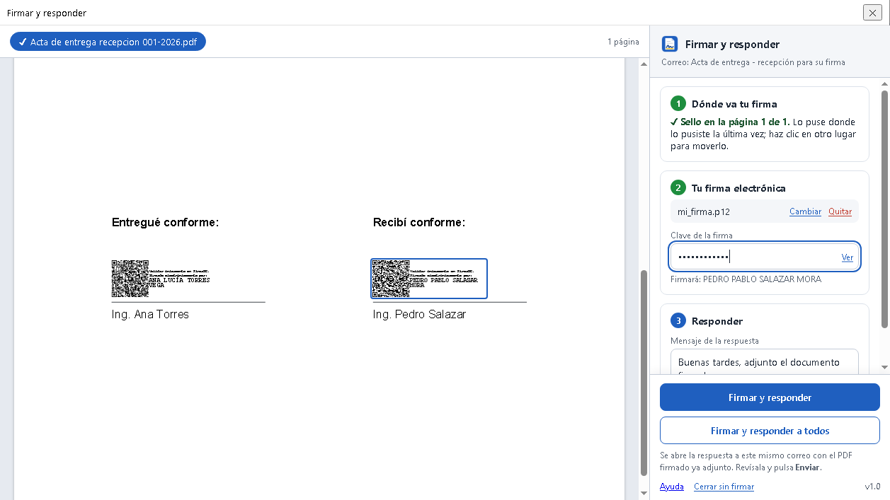
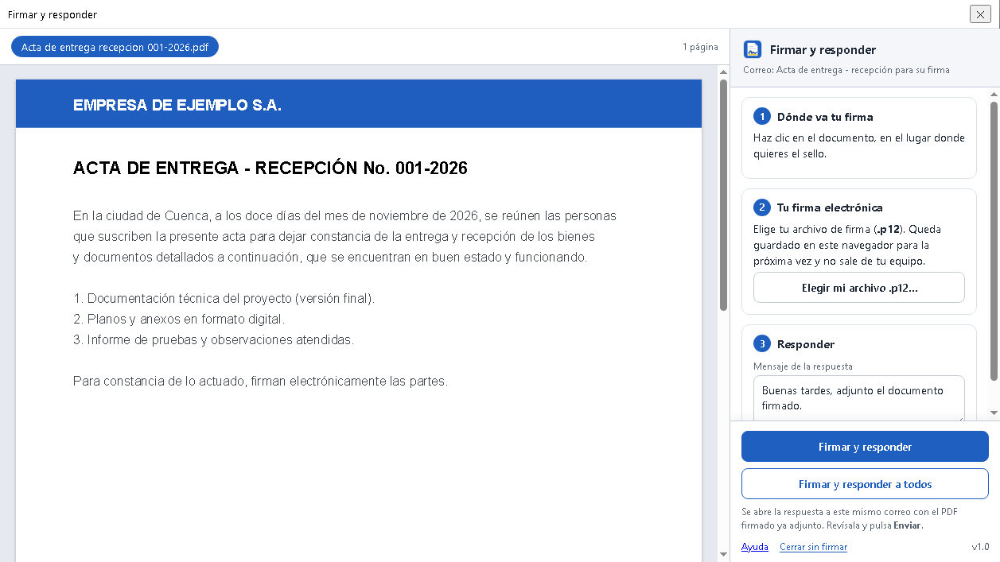
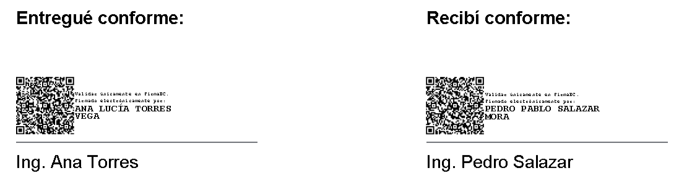

Firmar y responder
Firma electrónica de los PDF que te llegan por correo, sin salir de Outlook.
Cómo se usa
- Abre el correo que trae el PDF y pulsa Firmar y responder. Está en Aplicaciones (el ícono de cuadritos), junto a Responder y Reenviar.
- Se abre el PDF en grande. Haz clic donde va tu firma (la próxima vez ya aparece donde la pusiste), escribe la clave de tu firma y pulsa Firmar y responder o Firmar y responder a todos.
- Se abre la respuesta a ese mismo correo con el PDF firmado ya adjunto. Revísala y pulsa Enviar.

La primera vez
El programa te pide tu archivo de firma: pulsa Elegir mi archivo .p12… y busca el archivo que te entregó la entidad de certificación (por ejemplo Security Data). Solo se pide una vez por navegador.

Para quitarlo de este navegador (por ejemplo, si usas una computadora prestada) pulsa Quitar junto al nombre del archivo. Para usar otro archivo, pulsa Cambiar.
¿La firma es válida? ¿Cómo queda el sello?
Sí. Es una firma electrónica con tu certificado, del mismo tipo que la de FirmaEC (PDF firmado con SHA-512, “adbe.pkcs7.detached”). Lo que la hace válida es tu certificado, no el programa con que se firma. Se comprueba igual que siempre: abriendo el PDF firmado en FirmaEC, en la opción para verificar un documento (en la app del celular se llama «Verificar documento PDF»). No uses Adobe Reader para esto: con certificados de Ecuador suele decir «validez desconocida» aunque la firma esté bien.
El sello se ve como el de FirmaEC: el código QR a la izquierda y tu nombre a la derecha. El QR dice quién firmó, la fecha y dónde validar.

Si el PDF ya trae firmas de otras personas, se conservan: la tuya se agrega al final sin tocar las anteriores, y todas siguen siendo válidas.
Varios PDF en el mismo correo
Arriba de la ventana aparece una pestaña por cada PDF. Pon el sello en los que quieras firmar (se marcan con ✔). Al pulsar Firmar y responder se adjuntan todos los firmados. Los que no tienen sello no se firman ni se adjuntan.
Firmar un PDF que no viene en un correo
Abre esta página directamente en el navegador: eliges (o arrastras) el PDF, pones el sello, escribes tu clave y pulsas Firmar y descargar. Se descarga una copia con -signed al final del nombre; el original no cambia.
Si algo sale mal
- «La clave no es correcta»: escríbela de nuevo; ojo con las mayúsculas. Con el botón Ver puedes mirar lo que escribiste.
- «Tu firma electrónica venció»: hay que renovarla con la entidad que la emitió.
- «Este PDF está protegido» o «tiene clave para abrirlo»: pide a quien lo envió una versión sin protección.
- No aparece el botón: en el correo abierto, pulsa Aplicaciones (en la barra del mensaje, junto a Responder y Reenviar) y busca Firmar y responder. Para tenerlo siempre a la vista: Más aplicaciones → clic derecho sobre Firmar y responder → Anclar.
- «Tu Outlook no deja adjuntar el PDF firmado automáticamente»: pasa con versiones antiguas del Outlook de escritorio. El panel deja descargar el PDF firmado para adjuntarlo a mano; o usa Outlook en el navegador.
- Cada aviso tiene un Detalle técnico que se puede abrir; sirve para pedir ayuda.
Instalación (se hace una sola vez)
- Quien lo instala publica la carpeta
sitioen una dirección públicahttps(por ejemplo, GitHub Pages) y correGENERAR_MANIFIESTO.bat, que creamanifest.xml. - En Outlook en el navegador abre aka.ms/olksideload
→ ventana Complementos para Outlook → Mis complementos → sección Complementos personalizados
→ Agregar un complemento personalizado → Agregar desde archivo → elige
manifest.xml→ Instalar. - Si no aparece «Agregar un complemento personalizado», el administrador de Microsoft 365 debe instalarlo.
Firmar y responder v1.0 · usa pdf.js, pdf-lib, forge y qrcode-generator (licencias en lib/LICENCIAS.txt).